Quick Start
Install DryRun Security on GitHub or GitLab and start scanning pull requests in minutes.
GitHub Installation
Authorize and Install the DryRun Security GitHub Application
-
Navigate to https://app.dryrun.security and click the Log in with GitHub button.
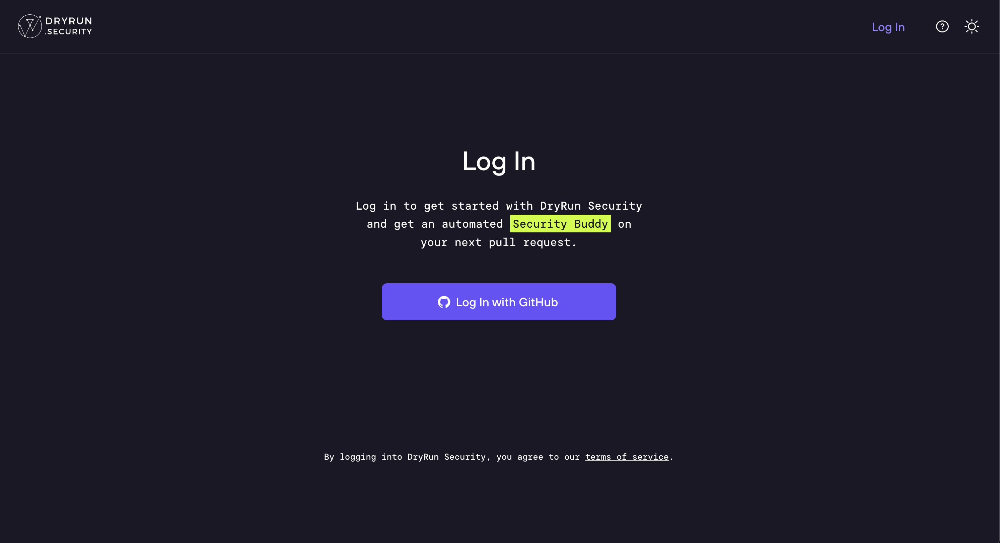
-
Log in to the GitHub account where DryRun Security will be installed.
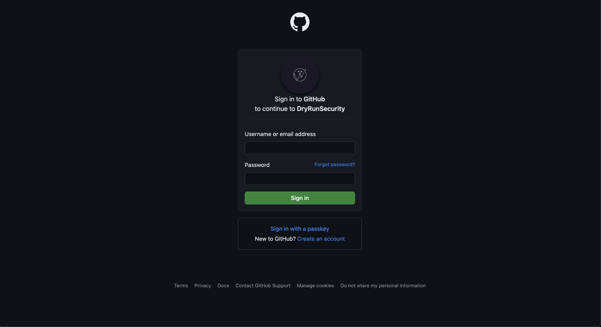
-
Authorize the DryRun Security GitHub Application by clicking the Authorize DryRunSecurity button.
Note: This is a standard authorization screen for all applications in GitHub.
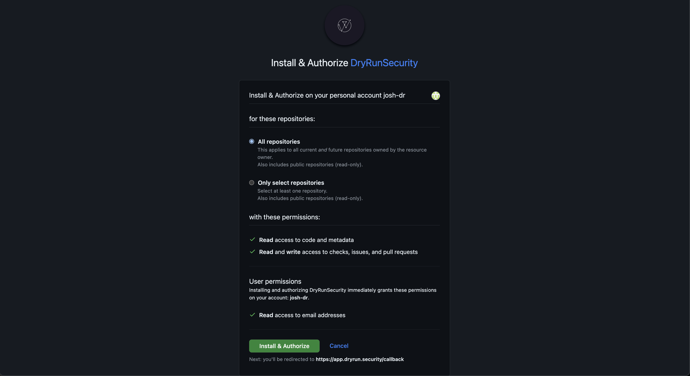
-
You'll be redirected to the DryRun Security portal. Click the Install button.
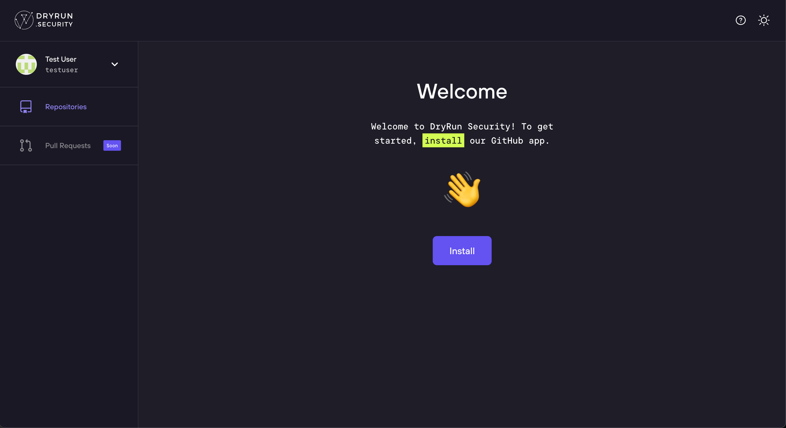
-
Click the Install button on the DryRunSecurity GitHub Application page.
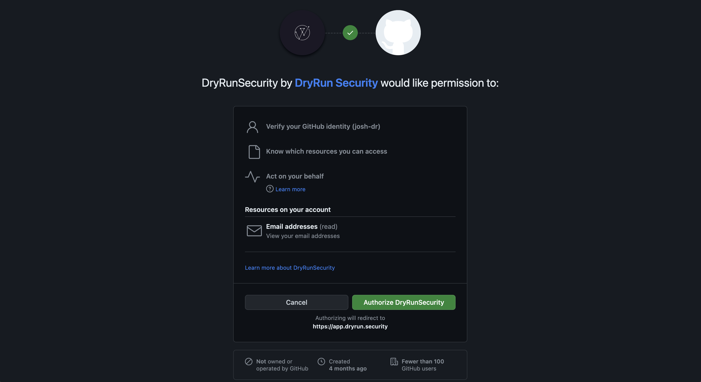
-
Choose the GitHub repositories DryRun Security will run by selecting All Repositories or Only selected repositories.
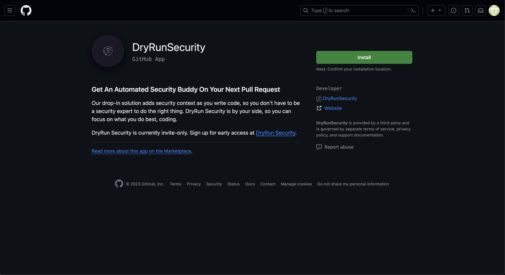
-
After step one your installation may be paused for up to 2 business days as we activate your account.
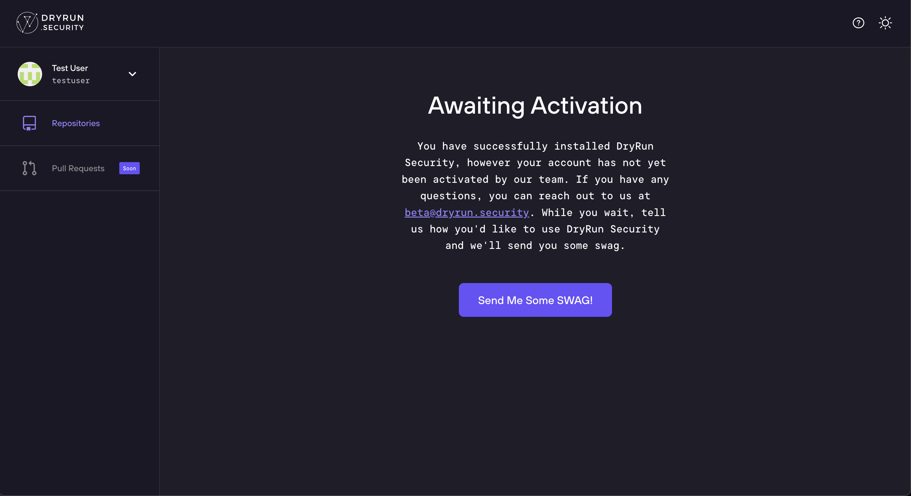
-
Once your account has been activated, you'll see the Installation Complete message the next time you visit https://app.dryrun.security.
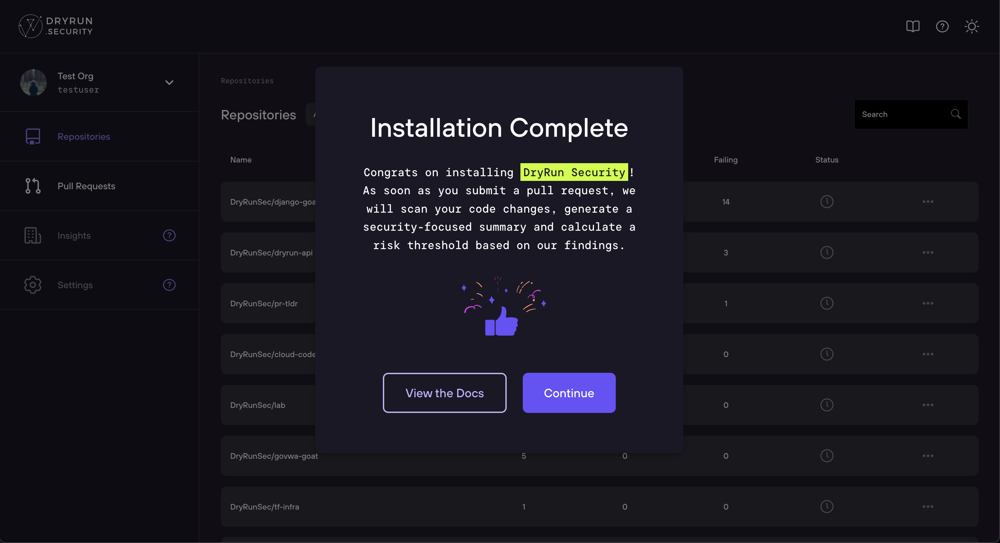
Congratulations! Installation is complete. At this point DryRun Security will run checks on your repository as code is committed to Pull Requests.
What's Next
Now that DryRun Security is installed, open a Pull Request against one of your selected repositories. DryRun Security will automatically run its security analysis and post results as a PR comment and in the GitHub Checks area.
- See PR Code Reviews to understand how DryRun Security analyzes your pull requests.
- See Configurations to customize which agents and policies run on each repository.
- See Natural Language Code Policies to create custom security rules in plain English.
GitLab Installation
DryRun Security for GitLab.com enables fast, contextual code reviews that help your team spot unknown risks before they start. This guide walks you through connecting your GitLab environment to DryRun Security by creating a Personal Access Token and completing the installation in the dashboard.
Create a Personal Access Token
This section describes creating a Personal Access Token (PAT) that will be used during the installation of DryRun Security.
Note: The GitLab user used to create the PAT needs to have at least Maintainer access to the Group or Project where DryRun Security will run.
Generating the Personal Access Token
- Log in to gitlab.com.
- Navigate to https://gitlab.com/-/user_settings/personal_access_tokens.
- Under Personal Access Tokens click Add new token.
- Add a token name and select the
apiandread_userscopes. - Click Create personal access token.
- Copy the token and save it for later use - it will not be shown again.
- Verify that the user who created the PAT has access to the Group where DryRun Security will be installed. The user should have at least Maintainer access. Add the user if necessary.
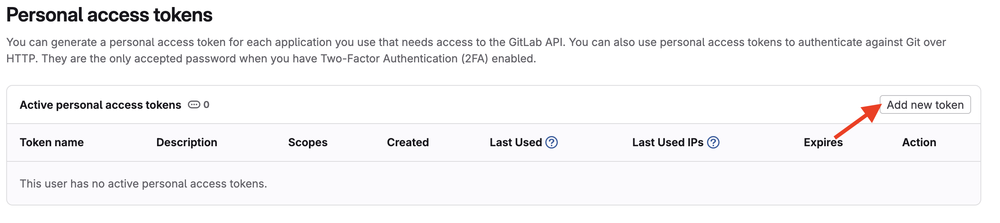
Install DryRun Security via the Dashboard
- Navigate to https://app.dryrun.security and click the Log in with GitLab button.
- Authorize the DryRun Security OAuth Application.
Important: Choose the User or Group where DryRun Security will run from the User/Group Selector. This is usually a GitLab Group. - Click the Add Token button or navigate to Settings > GitLab.
- Enter the Personal Access Token created earlier and click Save Token.
- Verify the User/Group for the Installation and click Confirm to confirm API access.
- Install on projects by clicking + next to the project and then click Save Projects.
Activation
Your installation may be paused for up to 2 business days as we activate your account. We'll notify you by email once your account is active.
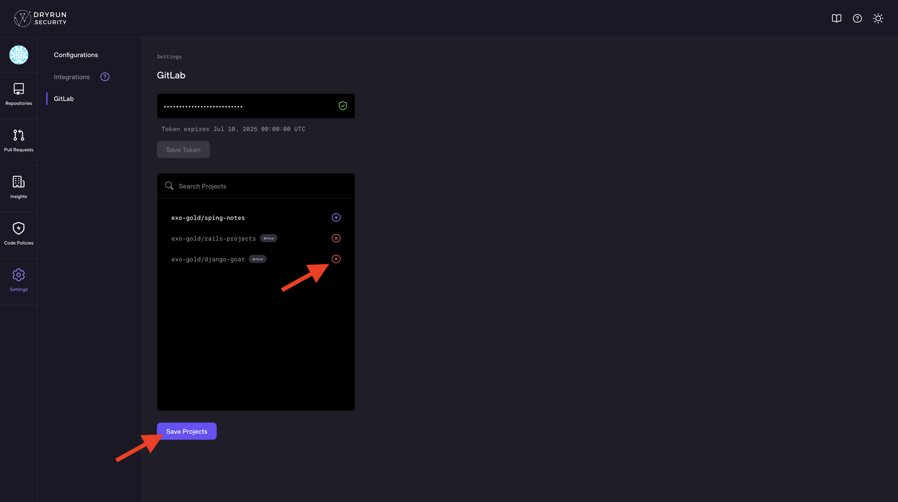
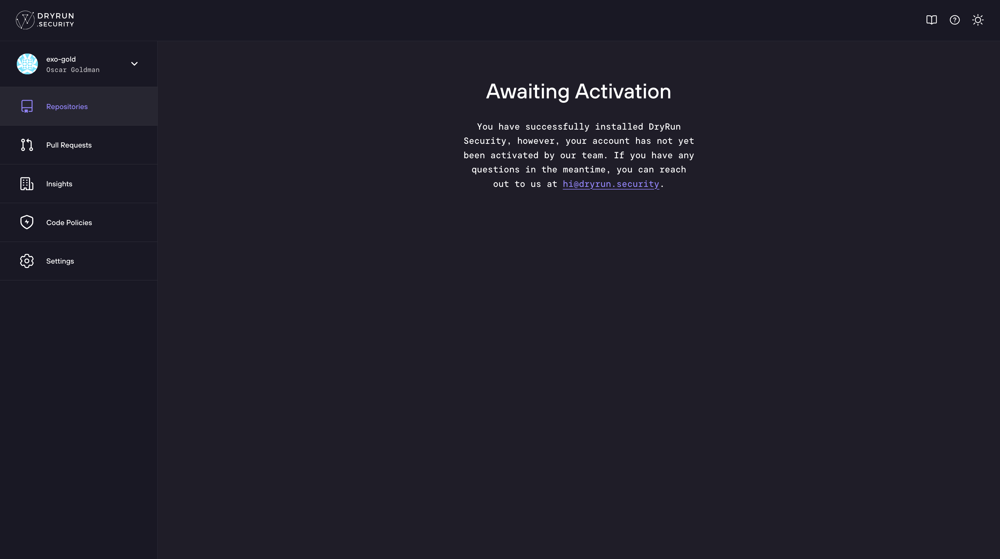
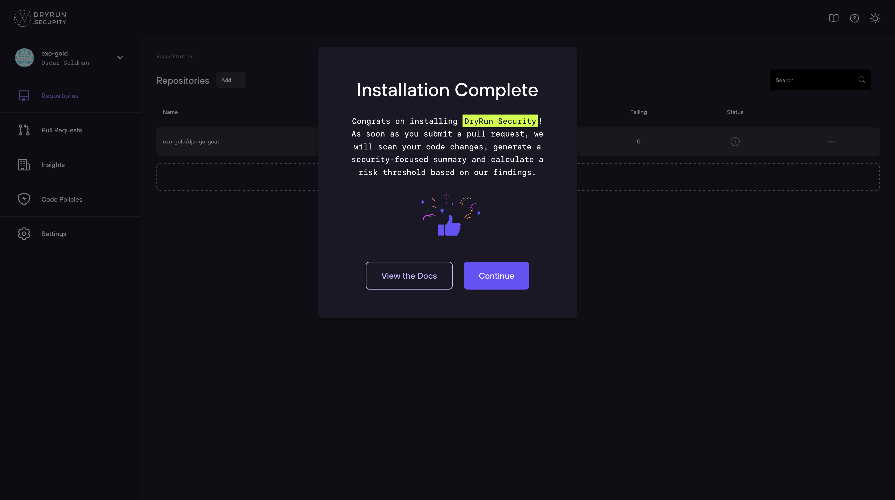
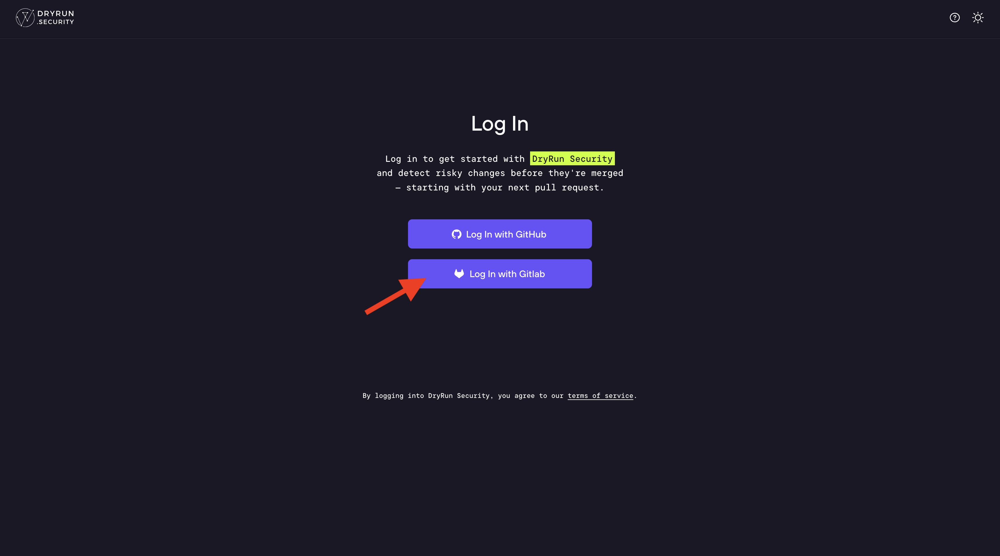
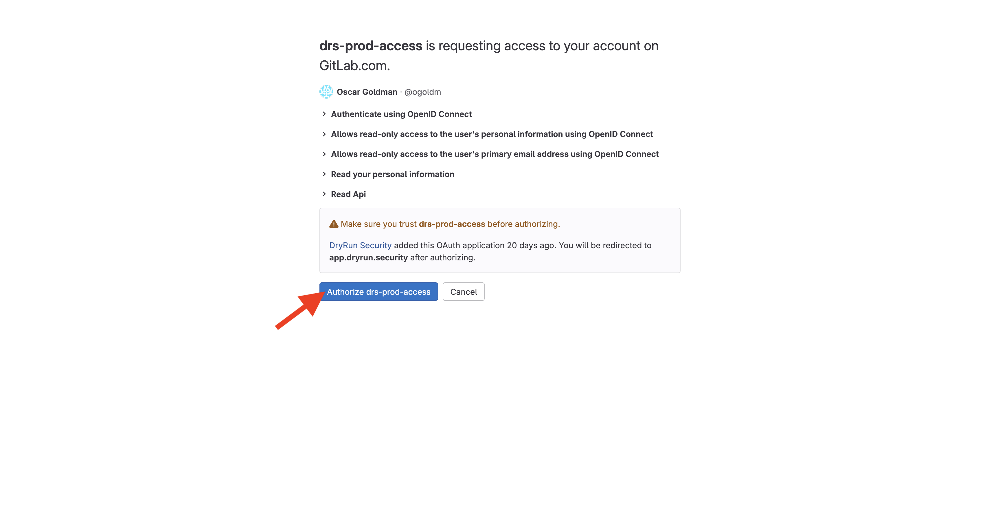
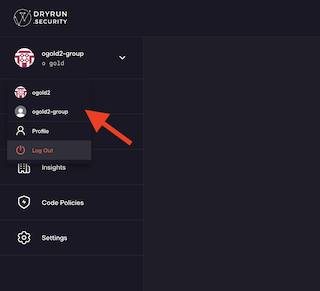
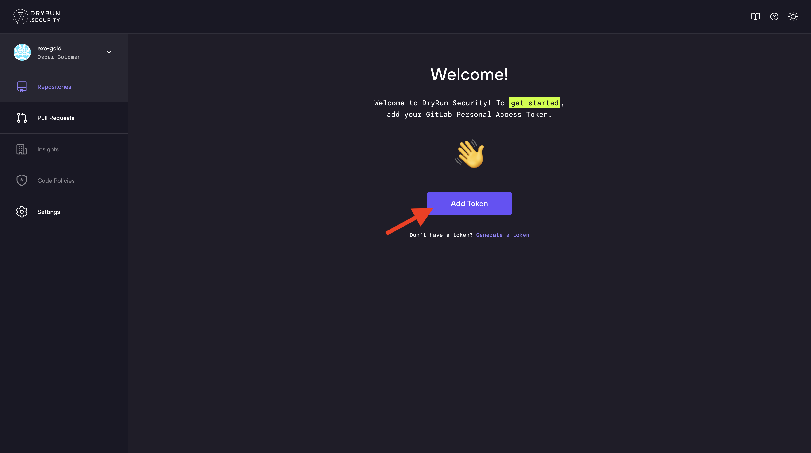
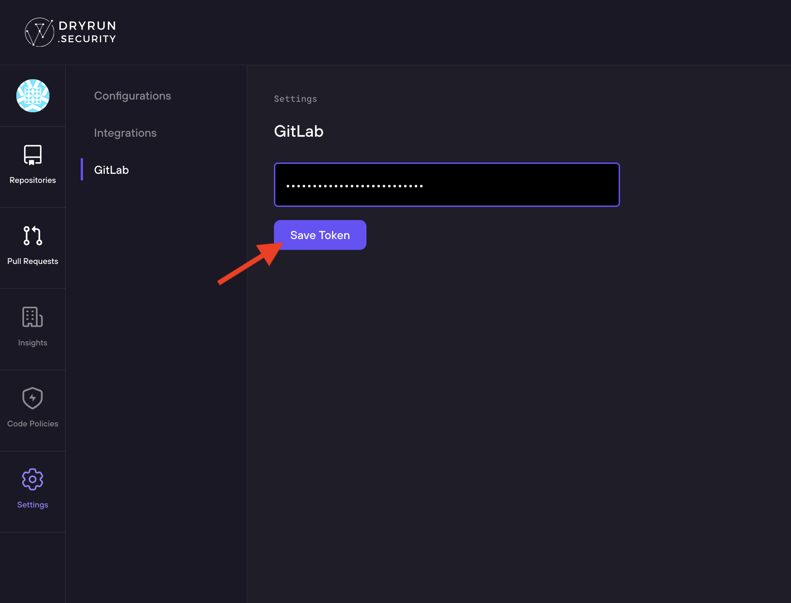
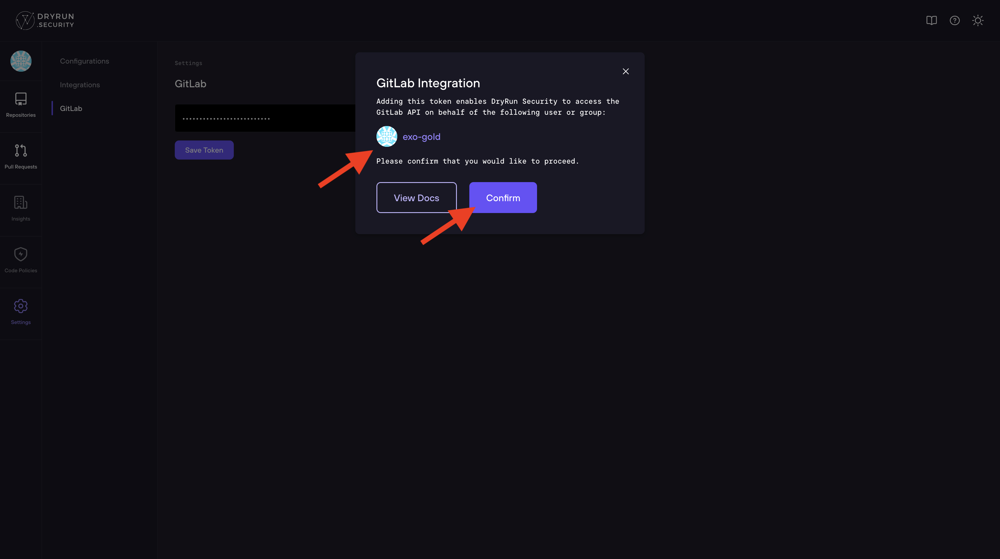
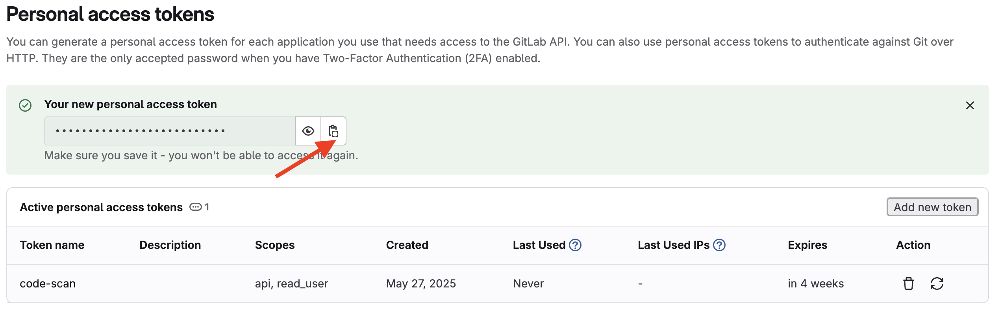
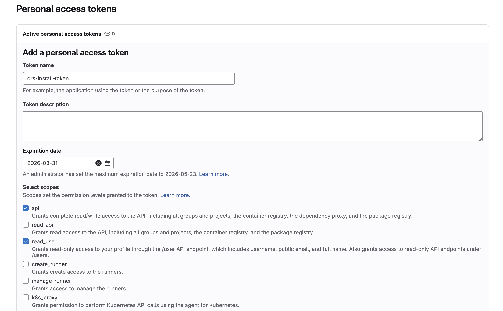
Once your account has been activated, you'll see the Installation Complete message the next time you visit https://app.dryrun.security.
Congratulations! Installation is complete. DryRun Security will now run and analyze changes as code is committed to Merge Requests.
SCM Support
Supported Platforms
DryRun Security integrates directly with the source code management (SCM) platforms your team already uses:
| Platform | Integration Method | Setup Guide |
|---|---|---|
| GitHub (Cloud) | GitHub App | Install for GitHub |
| GitLab (Cloud) | GitLab Integration | Install for GitLab |
GitHub Integration
DryRun Security connects to GitHub through a GitHub App installation. The App requests only the permissions necessary for security analysis:
- Repository contents (read) - to retrieve code for analysis
- Pull requests (read/write) - to receive PR events and post review comments
- Checks (read/write) - to post pass/fail check results on PRs
- Metadata (read) - repository metadata for organization and configuration
Supported Events
DryRun Security responds to the following GitHub events:
- Pull request opened - triggers a full security review of the PR
- Pull request synchronized (new commits pushed) - re-runs analysis on updated code
- Pull request reopened - re-runs analysis
Installation Scope
You can install the DryRun Security GitHub App for:
- All repositories in an organization - every repo gets security analysis automatically
- Selected repositories - choose specific repos to analyze
New repositories added to the organization will automatically receive coverage if you selected "All repositories" during installation.
GitLab Integration
DryRun Security connects to GitLab through an integration that monitors merge request events. The setup process is documented in the GitLab installation guide.
Supported Events
- Merge request opened - triggers security review
- Merge request updated (new commits) - re-runs analysis
How Reviews Appear
On both platforms, DryRun Security posts findings directly in the PR/MR interface:
- PR comment with a summary of findings, policy results, and an executive-level overview
- Check/status that passes or fails based on finding severity and configuration
- Inline annotations on specific lines of code where findings were detected
Developers see security feedback in the same interface they use for code review, with no separate dashboard or tool required to take action.
Configuration
After installation, configure repository-level settings through the DryRun Security platform. See Configure Repositories for options including analyzer selection, severity thresholds, and notification routing.
CI/CD Integration
DryRun Security in Your Pipeline
DryRun Security integrates natively with GitHub and GitLab CI/CD workflows. Because DryRun Security is a GitHub App (and a GitLab integration), it participates directly in the pull request and pipeline status check system - no additional CI/CD configuration is required to get basic integration. Every PR scan automatically posts a status check result that your pipeline infrastructure can act on.
GitHub Branch Protection Rules
The most common CI/CD integration pattern is using GitHub Branch Protection Rules to prevent vulnerable code from being merged into protected branches. DryRun Security supports this through the Blocking configuration on both Code Policies and Code Security Agents.
When a Code Policy or Agent has Blocking enabled:
- DryRun Security posts a failing status check to the PR when findings exceed the configured risk threshold.
- Your Branch Protection Rule requires this check to pass before a merge is allowed.
- The PR is blocked from merging until the finding is addressed or triaged.
See Configure Repositories for the full branch protection setup walkthrough.
Status Checks
DryRun Security posts individual status checks for each enabled agent and code policy. This granularity lets you enforce specific security gates - for example, requiring the Secrets Analyzer to pass on all PRs to main, while treating other agent findings as advisory.
Available status checks include:
- Code Policies - A single aggregated check for all NLCP policy findings.
- Individual agent checks - One check per enabled Code Security Agent (e.g.,
Secrets Analyzer,SQL Injection Analyzer).
API-Triggered Scans
For more advanced CI/CD use cases, the DryRun Simple API allows you to trigger DeepScans programmatically, retrieve findings, and integrate security data into your existing pipeline tooling. This enables patterns like:
- Triggering a DeepScan on merge to
mainand ingesting findings into your issue tracker - Querying current findings as part of a deployment gate decision
- Exporting SBOM data as a pipeline artifact on each release build
GitLab Pipelines
On GitLab, DryRun Security integrates with Merge Request pipelines. Analysis results are posted as Merge Request comments and pipeline status checks. The same blocking capability is available through GitLab's merge request approval rules, enabling you to require DryRun Security's checks to pass before a merge is allowed.